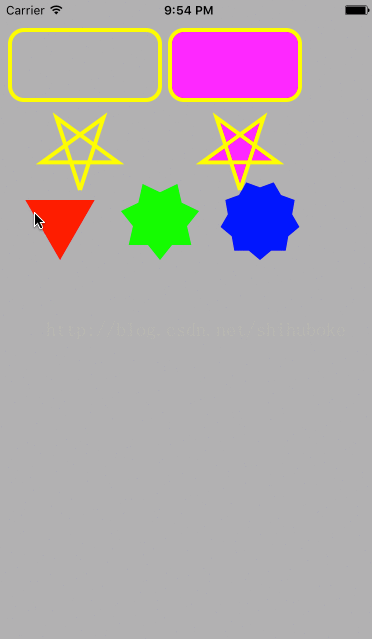
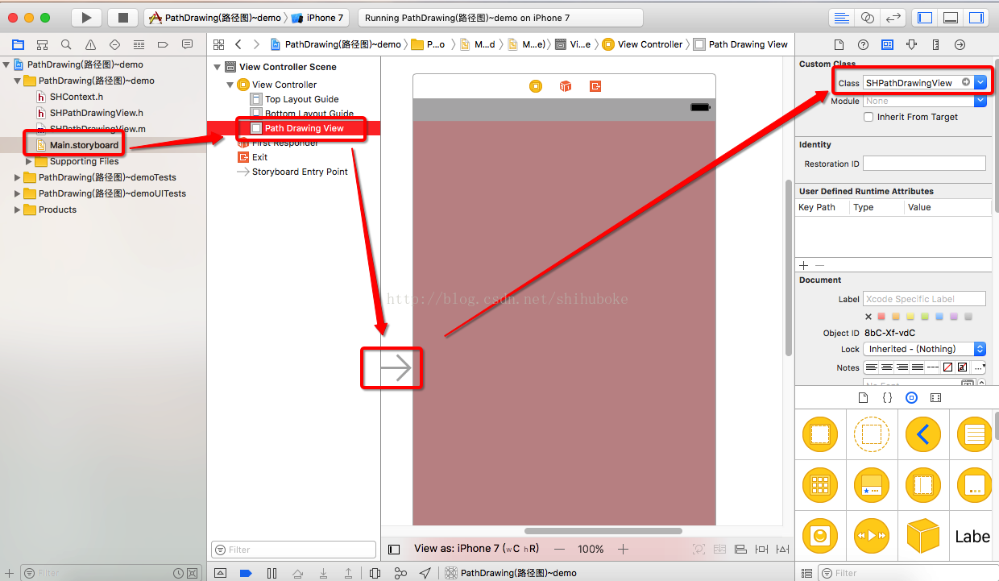
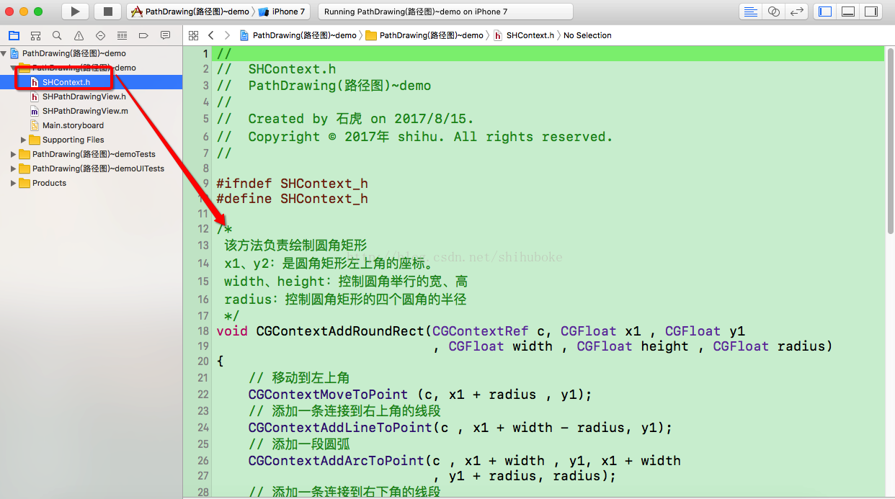

一、GIF 效果图: 
二、连线视图的效果图:  
三、实现代码:
控制器1: SHContext.h
//
// SHContext.h
// PathDrawing(路径图)~demo
//
// Created by . on 2017/8/15.
// Copyright © 2017年 shihu. All rights reserved.
//
#ifndef SHContext_h
#define SHContext_h
/*
该方法负责绘制圆角矩形
x1、y2：是圆角矩形左上角的座标。
width、height：控制圆角举行的宽、高
radius：控制圆角矩形的四个圆角的半径
*/
void CGContextAddRoundRect(CGContextRef c, CGFloat x1 , CGFloat y1
, CGFloat width , CGFloat height , CGFloat radius)
{
// 移动到左上角
CGContextMoveToPoint (c, x1 + radius , y1);
// 添加一条连接到右上角的线段
CGContextAddLineToPoint(c , x1 + width - radius, y1);
// 添加一段圆弧
CGContextAddArcToPoint(c , x1 + width , y1, x1 + width
, y1 + radius, radius);
// 添加一条连接到右下角的线段
CGContextAddLineToPoint(c , x1 + width, y1 + height - radius);
// 添加一段圆弧
CGContextAddArcToPoint(c , x1 + width, y1 + height
, x1 + width - radius , y1 + height , radius);
// 添加一条连接到左下角的线段
CGContextAddLineToPoint(c , x1 + radius, y1 + height);
// 添加一段圆弧
CGContextAddArcToPoint(c , x1, y1 + height , x1
, y1 + height - radius , radius);
// 添加一条连接到左上角的线段
CGContextAddLineToPoint(c , x1 , y1 + radius);
// 添加一段圆弧
CGContextAddArcToPoint(c , x1 , y1 , x1 + radius , y1 , radius);
}
/*
该方法负责绘制多角星。
n：该参数通常应设为奇数，控制绘制N角星。
dx、dy：控制N角星的中心。
size：控制N角星的大小
*/
void CGContextAddStar(CGContextRef c , NSInteger n
, CGFloat dx , CGFloat dy , NSInteger size)
{
CGFloat dig = 4 * M_PI / n ;
// 移动到指定点
CGContextMoveToPoint(c , dx , dy + size);
for(int i = 1 ; i <= n ; i++)
{
CGFloat x = sin(i * dig);
CGFloat y = cos(i * dig);
// 绘制从当前点连接到指定点的线条
CGContextAddLineToPoint(c , x * size + dx ,y * size + dy);
}
}
#endif /* SHContext_h */
=========================
===================================================
控制器2: SHPathDrawingView.m
//
// SHPathDrawingView.m
// PathDrawing(路径图)~demo
//
// Created by . on 2017/8/15.
// Copyright © 2017年 shihu. All rights reserved.
//
#import "SHPathDrawingView.h"
#import "SHContext.h"
@implementation SHPathDrawingView
- (void)drawRect:(CGRect)rect
{
// 获取绘图CGContextRef
CGContextRef ctx = UIGraphicsGetCurrentContext();
// 开始添加路径
CGContextBeginPath(ctx);
// 添加一个五角星的路径
CGContextAddStar(ctx, 5, 80, 150, 40);
// 添加一个圆角矩形的路径
CGContextAddRoundRect(ctx, 10, 30, 150, 70, 14);
// 关闭路径
CGContextClosePath(ctx);
// 设置线条颜色
CGContextSetRGBStrokeColor(ctx, 1, 1, 0, 1);
// 设置线宽
CGContextSetLineWidth(ctx, 4);
// 绘制路径
CGContextStrokePath(ctx);
// 开始添加路径
CGContextBeginPath(ctx);
// 添加一个五角星的路径
CGContextAddStar(ctx, 5, 240, 150, 40);
// 添加一个圆角矩形的路径
CGContextAddRoundRect(ctx, 170, 30, 130, 70, 14);
// 关闭路径
CGContextClosePath(ctx);
// 设置填充颜色
CGContextSetRGBFillColor(ctx, 1, 0, 1, 1);
// 采用填充并绘制路径的方式来绘制路径
CGContextDrawPath(ctx, kCGPathFillStroke);
// 开始添加路径
CGContextBeginPath(ctx);
// 添加一个3角星的路径
CGContextAddStar(ctx, 3, 60, 220, 40);
// 关闭路径
CGContextClosePath(ctx);
// 设置填充颜色
CGContextSetRGBFillColor(ctx, 1, 0, 0, 1);
// 填充路径
CGContextFillPath(ctx);
// 开始添加路径
CGContextBeginPath(ctx);
// 添加一个7角星的路径
CGContextAddStar(ctx, 7, 160, 220, 40);
// 关闭路径
CGContextClosePath(ctx);
// 设置填充颜色
CGContextSetRGBFillColor(ctx, 0, 1, 0, 1);
// 填充路径
CGContextFillPath(ctx);
// 开始添加路径
CGContextBeginPath(ctx);
// 添加一个9角星的路径
CGContextAddStar(ctx, 9, 260, 220, 40);
// 关闭路径
CGContextClosePath(ctx);
// 设置填充颜色
CGContextSetRGBFillColor(ctx, 0, 0, 1, 1);
// 填充路径
CGContextFillPath(ctx);
}
@end